Design a multi-step agent pipeline on a canvas, then hit Run. Each step is its own Claude Code subagent. When a run hits your usage limit at 2am, it checkpoints, waits for the window to reset, and resumes exactly where it stopped.
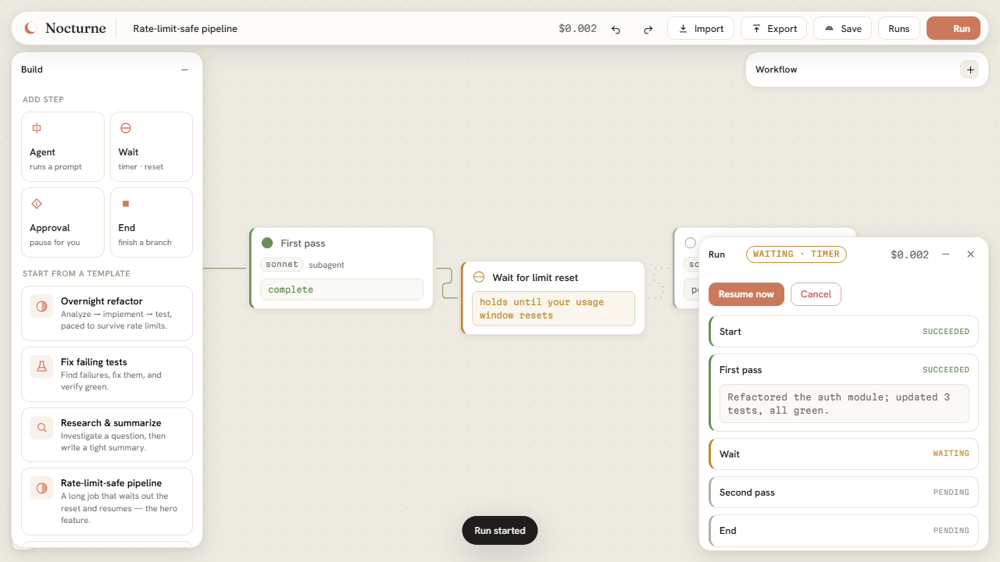
Anthropic split durability and control across two surfaces that don't overlap. Nocturne is the layer in between — a free, open-source Claude Code workflow automation tool and scheduler: a local, durable engine that lets you run Claude Code overnight, unattended, and monitor it from a peer-to-peer mobile app.
| Capability | Anthropic cloud | Anthropic local | Nocturne |
|---|---|---|---|
| Survives session close / sleep | yes | no | yes |
| Runs in your environment (files, MCP, toolchain) | fresh clone | yes | yes |
| Your permission rules, watchable | autonomous | yes | yes |
| Flat-rate subscription economics | capped + metered | yes | yes |
| Durable multi-step orchestration with waits + resume | partial | no | yes |
| Visual design surface | no | no | yes |
| Turns your own session history into workflows | no | no | yes |
| Peer-to-peer mobile companion — pair by QR, works from any network, E2E-encrypted | no | no | yes |
A canvas with taste, an engine that doesn't lose your work, and an interface designed to feel simple but be powerful.
Drop in agent steps, timed waits, human approval gates, and if/else conditions, then wire them together. Fan-out is just multiple outgoing edges; an AND-join is multiple incoming edges. Steps hand off through {{steps.id.output}} references.
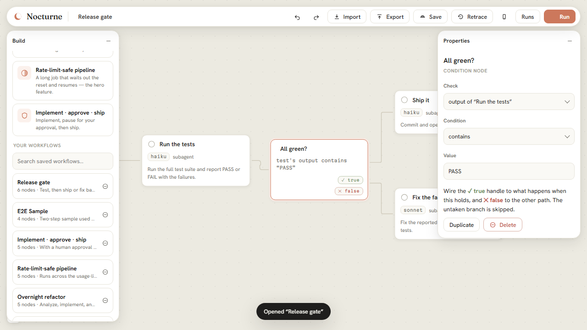
Every step is configured with choices, not typing. Model is a segmented control. Prompts have one-tap starters. Tools are preset bundles plus toggle chips. Permissions are a plain-language dropdown, with the rarely-needed knobs tucked behind Advanced.
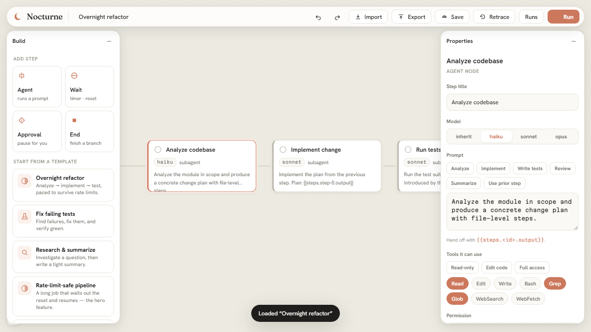
Steps run in streaming mode. Nocturne parses each assistant delta and tool call and pushes it over a WebSocket, so the canvas and the run panel show the work as it happens — the file being edited, the command being run, the cost ticking up.
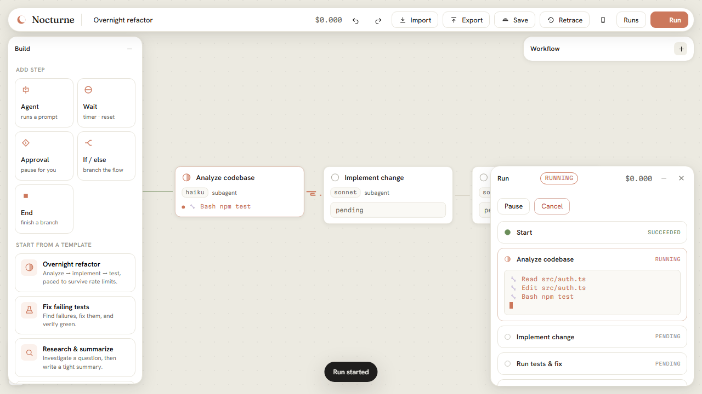
When a step hits your 5-hour or weekly usage limit, the run checkpoints, suspends into a timed wait with the parsed reset time, and auto-resumes at the exact step it stopped. The rate limit doesn't even count as a failed attempt. Add a Wait for limit reset node anywhere to pace long jobs on purpose.
Drop an approval node where a human needs to sign off — before a push, before a deploy. The run pauses, shows you the upstream output and your message, and waits. Approve to continue, reject to stop. It survives you closing the tab.
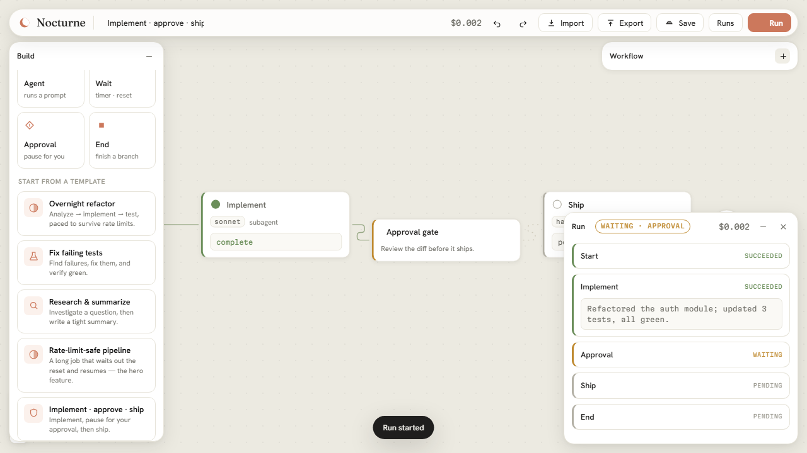
The exported file is the canvas document is the library entry: a single .nocturne.json everywhere. It carries no absolute paths (the validator rejects them outright), and anything that looks like a secret — API keys, tokens — is flagged before you share. It moves between machines cleanly. Importing a shared workflow opens a review dialog first — you see every prompt, model, and tool grant before it touches your machine.
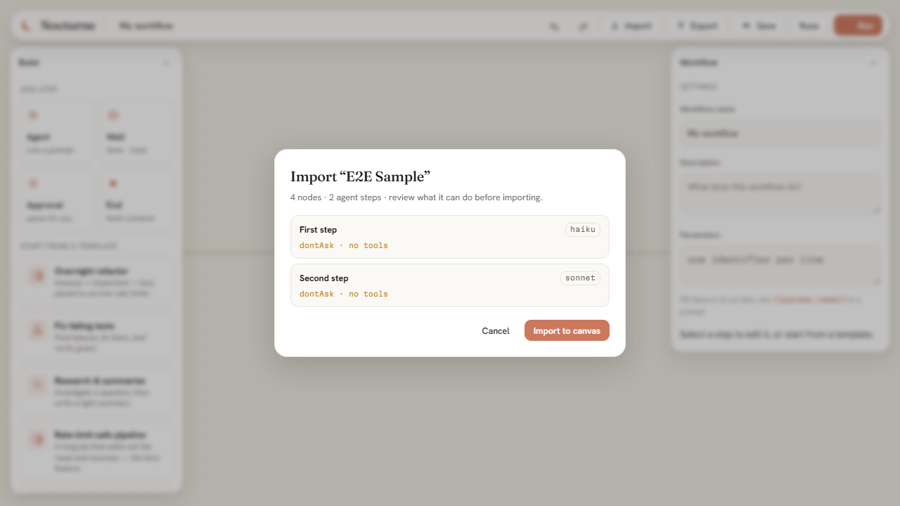
The hardest part of automation is noticing what's worth automating. Click Retrace and Nocturne reads your last 24 hours of Claude Code sessions — locally, from ~/.claude/projects — and drafts reusable workflows from what you actually did. Something good happened with a client? It becomes a workflow you can run, tune, and share, so you get it right every time.
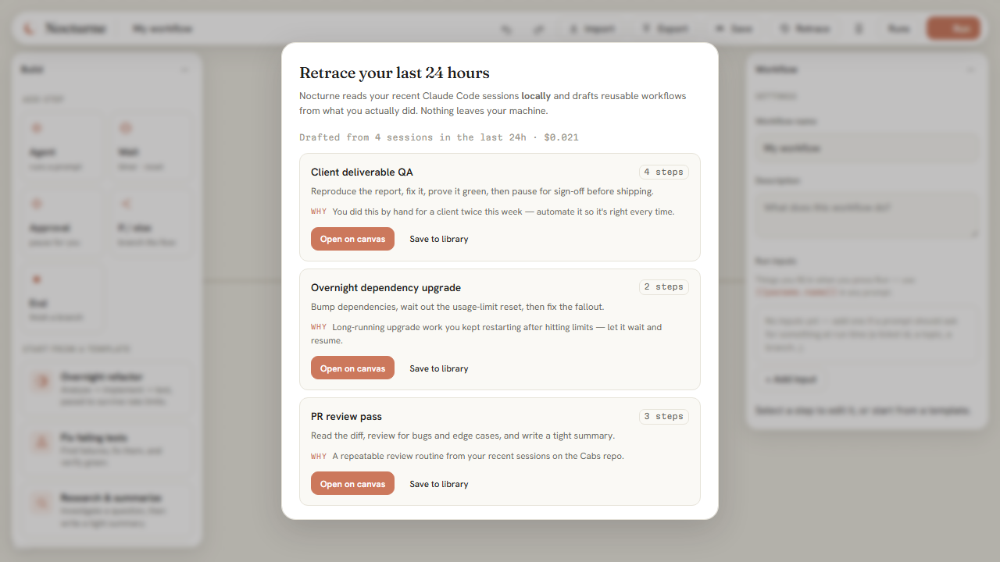
Nocturne ships an MCP server, so you can launch and check on durable runs just by asking — in Claude Desktop, Claude Code, Cursor, or any MCP client. It's a thin adapter over the same daemon, so a run you kick off from a chat keeps going after the chat ends.
/plugin marketplace add …/nocturne.mcpb extension; a nocturne skill teaches Claude when to use itr-8f0c. It'll keep running after you close this — poll get_run anytime.Nocturne isn't just for coders. The built-in library ships searchable, ready-to-run steps that encode named industry practices across every kind of work — pick one, tune it, run it. Each step is a complete brief with a definition of done, not a vague one-liner.
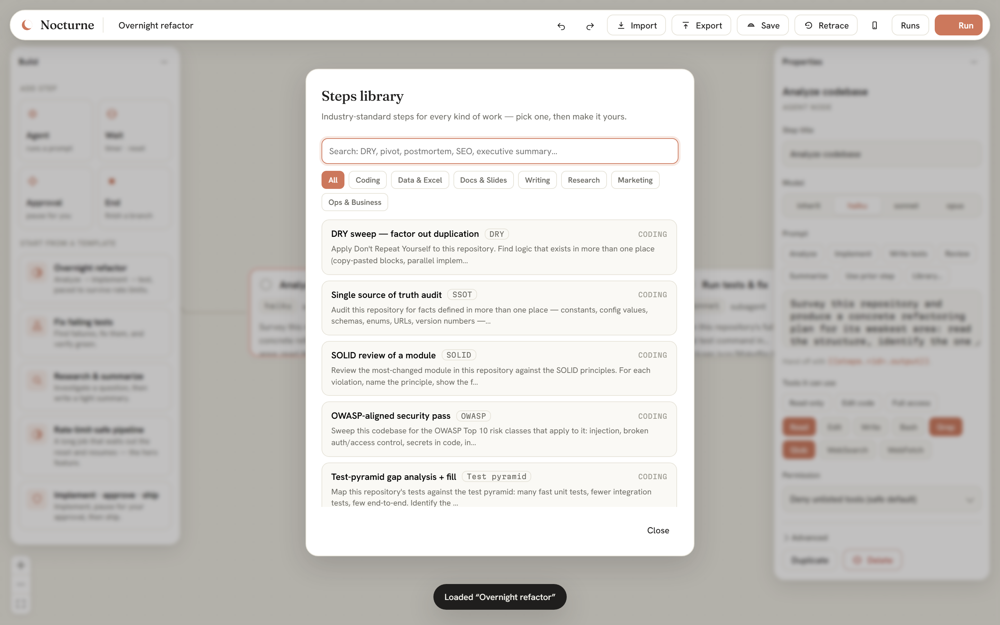
The first Claude Code plugin with a peer-to-peer mobile companion — and it is
not tied to your Wi-Fi. Start the daemon with --remote, scan the QR once, and your
phone monitors and drives your workflows from any network — home, office, coffee
shop, LTE. No account, no port-forwarding, no server of ours.
mobile/. Same-Wi-Fi
--lan mode still there, fastest of all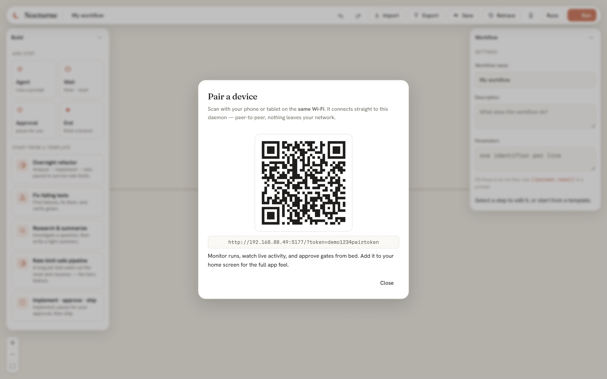
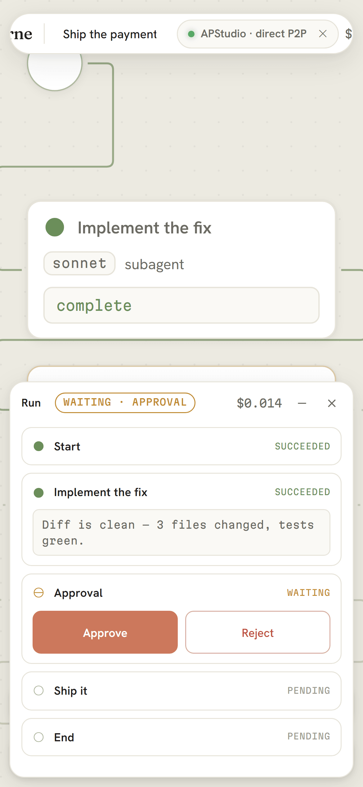
Declare run inputs — a branch name, a ticket ID, a target directory — each with a
hint and an optional default. The Run dialog asks for them as a form, and prompts reference them
anywhere with {{params.name}}. One saved workflow serves every repo and every ticket;
conditions can even branch on an input.
.nocturne.json file — share a workflow and its form travels with itrun_workflow takes params)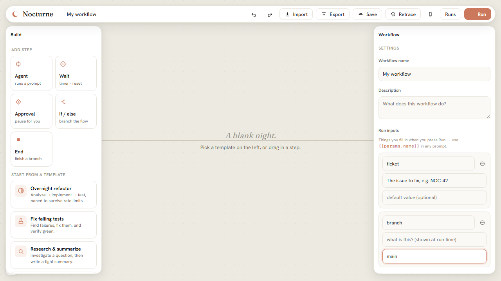
From a blank canvas to a finished job that survived the night — every step, with a screenshot.
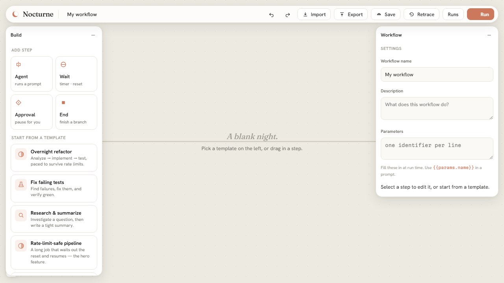
What happens when the process dies, the clock drifts, or the usage limit hits — by design, not by luck.
Spawns the official claude binary (never extracts tokens), so runs draw from your flat-rate plan — not per-token API billing.
Atomic checkpoints + an append-only event log. Kill it mid-run and it resumes at the in-flight step.
Waits persist as absolute wake times. A timer slept through fires on the next wake — catch-up, never lost.
A per-run lock and per-step read-modify-write persistence mean pausing or approving never races the executing steps.
Branch into parallel subagents and AND-join their outputs. Each step is its own fresh context window.
Reads your local session history and drafts workflows from it — compiled and schema-validated before you ever see them.
An MCP server exposes the daemon to Claude Desktop, Claude Code, any MCP client — and your phone. One daemon, five front doors.
219 tests green — 190 unit and integration, 6 UI end-to-end, plus an independent audit that SIGKILLs the real daemon mid-run and a live Anywhere proof through real public relays.
The exported .nocturne.json is the canvas document and the library entry — share it anywhere, its run-input form travels with it.
No exotic dependencies, no lock-in — a small set of tools chosen for reliability at 3am.
claude CLITypeScript end to end · zod-validated everything · spawns the official claude binary, never re-implements it · Kotlin/Compose on Android · one portable JSON format everywhere.
# clone, then from the repo root
npm install
npm run build:ui # build the canvas
npm run serve # daemon → http://localhost:5151Open the URL, pick a template, and press Run. For unattended runs that survive closing your terminal, generate a long-lived token with claude setup-token and add it to ~/.nocturne/config.json.